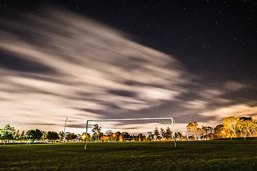

6 complejos en Luján
Con cancha de Fútbol 5. Los horarios son los libres de hoy.

La Canchitaa 1,2 km · Fútbol 5 y 7desde $36.000
Hoy
19:0020:0022:00+3

Basílica F5a 2,4 km · Fútbol 5Precio en su página
Hoy
18:0023:00
Club Social El Oestea 3,1 km · Fútbol 5, 8 y 11desde $40.000
Hoy
Hoy no le quedan horarios. Mirá otros días en su página.

Las Rosas Fútbola 4,8 km · Fútbol 5 y 6desde $34.000
Hoy
20:0021:0023:00

Tercer Tiempoa 5,0 km · Fútbol 5Precio en su página
Hoy
19:0000:00

Potrero Nortea 6,3 km · Fútbol 5 y 7desde $30.000
Hoy
18:0019:0021:00+2